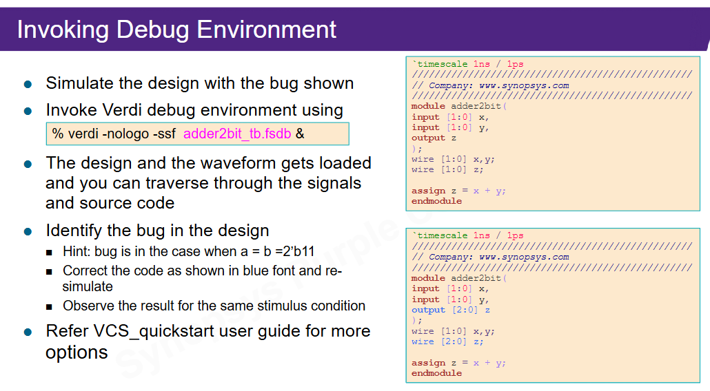

Por que esta aula importa
Um design de referência não existe para ser grande. Ele existe para reduzir o problema até um tamanho em que você consegue enxergar o fluxo inteiro: RTL, testbench, compilação, simulação, log, waveform, debug e repetição.
O exemplo principal é um somador de 2 bits. Ele é simples de propósito. Se algo falha, você consegue separar rapidamente se o problema está no RTL, no testbench, no comando do simulador ou na forma como está observando o resultado.
Mapa mental do fluxo
Os slides reforçam a estrutura básica de verificação:
stimulus generator -> DUT -> response checkerO DUT é o design. O testbench fica ao redor dele, aplica estímulos e observa respostas. Quando existe um checker, o testbench não apenas gera ondas; ele decide se a resposta está correta.
Detalhe: por que waveform não basta
Waveform é excelente para investigar um erro. Mas, sozinha, ela depende de inspeção humana. Um testbench mais forte precisa produzir uma conclusão objetiva no log, como passou ou falhou.
Testbench como topo da simulação
O testbench normalmente não tem portas externas. Ele é o topo da simulação e instancia o DUT.
Por isso pode usar recursos que não entram em síntese, como delays, dumps de onda,
$display, $monitor e $finish.
module adder2bit_tb;
reg [1:0] x;
reg [1:0] y;
wire [2:0] z;
adder2bit uut (
.x(x),
.y(y),
.z(z)
);
endmodule
As entradas do DUT são dirigidas por reg no testbench. As saídas do DUT são
observadas como wire. Isso descreve o ambiente de simulação, não necessariamente
hardware extra no design final.
VCS em dois passos
O curso começa com o fluxo mínimo:
vcs -file adder2bit_tb.v ../rtl/adder2bit.v
./simv
A primeira linha chama o VCS para compilar/elaborar o design e gerar o executável da simulação.
A segunda linha roda esse executável. O arquivo simv não é fonte Verilog; ele é o
programa de simulação gerado pelo VCS.
Ligação com make sim
Quando o professor usa make sim, o makefile provavelmente está escondendo
uma sequência parecida: limpar restos antigos, passar filelists, chamar VCS, rodar
simv, salvar logs e talvez gerar arquivos de onda.
Fluxo em três passos
Em projetos maiores, o fluxo aparece separado:
vlogan -work work -kdb -f source_list -l analyze.log
vcs -kdb top_tb -l elaborate.log
./simv -l sim.logvlogananalisa os arquivos HDL, checa sintaxe e prepara dados intermediários.vcselabora o design, resolve hierarquia e gera o executável.simvexecuta a simulação no tempo.
A diferença prática é controle. O fluxo de dois passos é ótimo para exemplo pequeno. O de três passos facilita logs, bibliotecas, filelists e debug em projetos maiores.
Debug com Verdi
VCS e Verdi se complementam, mas não são a mesma coisa. VCS simula. Verdi depura. O comando mostrado no slide abre um banco de sinais:
verdi -nologo -ssf adder2bit_tb.fsdb &
O arquivo .fsdb guarda sinais da simulação. Com ele, o Verdi permite navegar por
waveform, hierarquia e código fonte, o que ajuda a localizar a causa de uma resposta errada.

z era pequena demais.
Aprofundamento: o bug de largura
A maior entrada de 2 bits é 2'b11, que vale 3. Se somamos 3 + 3, o resultado é 6,
ou 3'b110. Portanto a saída do somador precisa de 3 bits.
input [1:0] x;
input [1:0] y;
output [2:0] z;Esse tipo de erro aparece muito em RTL: o operador está certo, mas a largura do sinal perde informação. Por isso, quando houver soma, multiplicação, contador ou índice, sempre revise largura de entrada, largura interna e largura de saída.
Terminal e waveform
O terminal dá uma resposta rápida:
x=00 y=00 z=0
x=01 y=01 z=2
x=11 y=11 z=6
x=10 y=10 z=4A waveform responde outra pergunta: em que instante cada sinal mudou e qual sequência temporal levou à resposta observada. Use log para confirmar casos principais e waveform para investigar causa temporal.
Organização de projeto
Os slides recomendam separar papéis:
src/ RTL fonte
sim/ área de simulação
log/ logs
script/ scripts ou makefiles
netlist/ saídas estruturais quando houver síntese
mapped/ resultado mapeado para tecnologia
unmapped/ resultado antes do mapeamento finalA lição não é decorar esses nomes. A lição é não misturar RTL, testbench, script, log e resultado gerado. Essa separação é o que permite automatizar o fluxo.
Filelists
Em vez de passar muitos arquivos manualmente no comando, você passa uma lista:
vcs -f filelist.fIsso deixa a ordem de compilação versionável, revisável e repetível. No seu projeto, deve haver diferença entre filelist de simulação e filelist de síntese.
Makefile
Um makefile transforma comandos repetitivos em alvos:
ana:
vlogan -kdb -f filelist.f -l log/analyze.log
comp:
vcs -kdb top_tb -l log/elab.log
sim:
./simv -l log/sim.log
clean:
rm -rf simv csrc *.log *.fsdbPor isso o professor insiste em makefile: ele quer um fluxo reexecutável e auditável.
Plano de verificação
Um dos slides diz que o plano de verificação está para o engenheiro de verificação como a especificação funcional está para o designer RTL. Isso é uma frase importante.
Antes de simular, você precisa saber o que deve ser testado. Para um somador, isso inclui valores simples, bordas e carry. Para uma CPU, inclui instruções, registradores, flags, memória, reset, saltos e casos inválidos.
A escada dos designs de referência
Os exemplos listados pelo curso treinam habilidades diferentes:
| Design | O que treina |
|---|---|
| 32-bit adder | Largura de sinal, carry e lógica combinacional. |
| 16x16 multiplier | Resultado maior que as entradas. |
| Counter with overflow | Clock, reset, enable e flag. |
| Up/down counter | Controle por direção. |
| 2-client arbiter | Prioridade, decisão e estado. |
| Mux, demux, encoder, decoder | Seleção, roteamento e codificação. |
| 2x2 matrix multiplication | Composição de operações aritméticas. |
O valor não está em decorar cada exemplo. O valor está em repetir o ciclo até ele ficar natural:
ler RTL -> ler testbench -> rodar simulação -> conferir log -> abrir waveform -> corrigir -> rodar de novoLigação com o RTL_LAB2
Quando formos adaptar seu lab antigo ao ambiente novo, esta aula vira checklist:
- Qual arquivo é RTL e deve entrar na filelist de design?
- Qual arquivo é testbench e deve ficar só na simulação?
- Qual é o topo do DUT?
- Qual é o topo da simulação?
- Existe checker automático ou só waveform?
- Quais logs indicam sucesso?
- Quais sinais precisam ser gravados para abrir no Verdi?
Audio: precisa?
Para esta aula, o áudio não parece obrigatório. Os slides têm comandos, exemplos e diagramas suficientes para reconstruir o núcleo técnico.
Ele só seria útil se você quiser capturar detalhes práticos da GUI do Verdi, convenções do professor para makefiles ou erros específicos do servidor da UFRGS.
Base Markdown: aula didática, cobertura slide a slide.